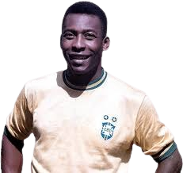
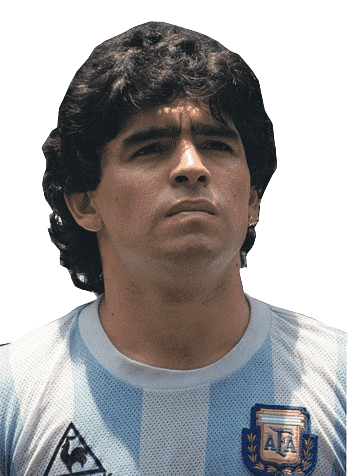
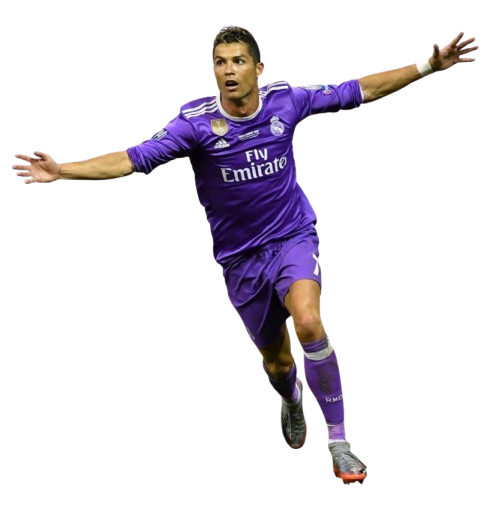
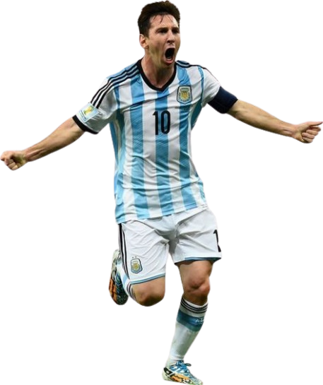
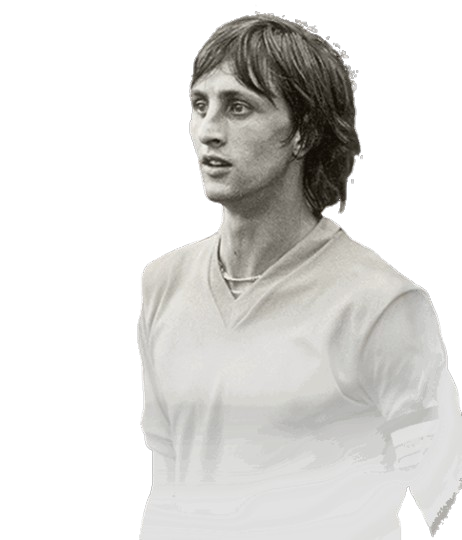
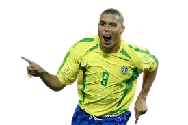
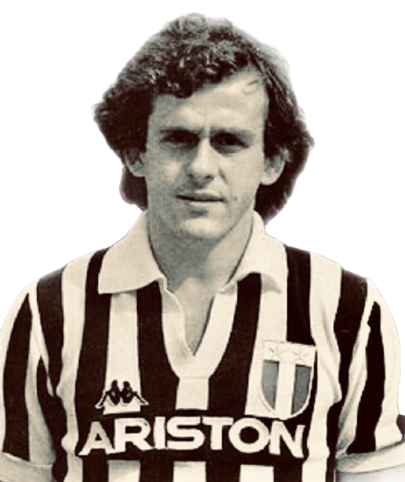

Futball Legendák
Pelé – A "Futball Királya"
Pelé, teljes nevén Edson Arantes do Nascimento, a világ egyik legismertebb és legnagyobb futballistája. 1940. október 23-án született Brazíliában, és már fiatalon megmutatta rendkívüli tehetségét. A 1958-as világbajnokságon, mindössze 17 évesen, ő lett a torna legfiatalabb gólkirálya, és segítette Brazíliát megnyerni első világbajnoki címét. Pelé összesen három világbajnoki aranyérmet nyert (1958, 1962, 1970), ami rekordnak számít. Pályafutása során több mint 1000 gólt szerzett, és hosszú évekig a Santos FC, majd a New York Cosmos csapatában is játszott. Pelé a futball igazi ikonja, aki nemcsak a pályán, hanem azon kívül is hatalmas hatással volt a sportág globális népszerűsítésére.
Diego Maradona – Az "Arany Kéz"
Diego Maradona 1960. október 30-án született Argentínában, és a futballtörténelem egyik legnagyobb tehetségeként tartják számon. Pályafutása csúcspontja az 1986-os világbajnokság, ahol Argentínát a címhez vezette. Maradona legendás teljesítményt nyújtott, és a "Kéz Istenét" (Hand of God) és a "Század Gólja" néven ismertté vált gólokat is ő szerezte. Pályafutása során számos klubban megfordult, többek között a Barcelonában és a Nápolyi Calcioban, ahol hatalmas sikerrel szerepelt. Maradona nemcsak a pályán, hanem személyiségével is hatalmas hatást gyakorolt a futball világára, és sokak számára ő volt a legnagyobb minden idők játékosa.
Cristiano Ronaldo – A "CR7" Jelenség
Cristiano Ronaldo, a portugál futballzseni, 1985. február 5-én született Funchalban, Madeirán. Az évek során minden rekordot megdöntött, és minden idők egyik legjobb játékosává vált. Pályafutása alatt számos klubban játszott, köztük a Manchester Unitedben, a Real Madridban és a Juventusban, mindegyik csapatában kiemelkedő sikereket elérve. Összesen öt aranylabdát nyert, és számos nemzeti és klubszintű bajnoki címet szerzett. Cristiano Ronaldo híres a hihetetlen fizikai felkészültségéről, a gólszerző képességeiről és a munkamoráljáról. A portugál válogatottal 2016-ban megnyerte az Európa-bajnokságot, és egyre újabb rekordokat döntöget minden szezonban.
Lionel Messi – A "La Pulga" Csodája
Lionel Messi, az argentin csodagyerek, 1987. június 24-én született Rosarióban, és a világ legjobb játékosai közé tartozik. Pályafutását a Barcelonában kezdte, ahol több mint 20 évet töltött, és számos rekordot állított fel, például a legjobb gólkirályi címekkel és a legtöbb aranylabdával. Messi az argentin válogatottal Copa América-t nyert 2021-ben, és világbajnoki győzelmet ért el 2022-ben, amellyel véglegesen beírta nevét a futballtörténelembe. Minden egyes gólja és gólpassza olyan pillanatokat ad, amikre sokáig emlékezni fognak a futballszurkolók világszerte.
Johan Cruyff – A "Futball Filozófus"
Johan Cruyff, a holland futballzseni, 1947. április 25-én született. Pályafutása alatt ő volt az egyik legnagyobb hatással bíró játékos és edző, aki a "totális futball" eszméjét hozta el a világnak. Cruyff a Barcelona legendája, aki játékosként és edzőként is óriási sikereket ért el. Ő volt az, aki új irányba vitte a holland és a barcelonai futballt, és alapjaiban formálta meg a modern játék filozófiáját. A pályán ő volt a kreativitás megtestesítője, és a legnagyobb csapatok számára is példát mutatott a csapatjáték és a támadó foci terén.
Ronaldo Nazário – A "Fenomeno"
Ronaldo, teljes nevén Ronaldo Luís Nazário de Lima, 1976. szeptember 22-én született Brazíliában. A "Fenomeno" néven ismert támadó a 90-es évek egyik legnagyobb tehetsége volt. Két világbajnoki címet nyert (1994, 2002), és pályafutása alatt számos klubban játszott, mint a Barcelona, a Real Madrid és az Inter Milan. Ronaldo híres volt páratlan sebességéről, technikai tudásáról és gólszerző képességéről. Az ő nevéhez fűződnek a legnagyobb futballpillanatok, és még ma is őt emlegetik az egyik legtehetségesebb játékosként, akit valaha a pályán láthattunk.
Michel Platini – A "Francia Mágus"
Michel Platini 1955. június 21-én született Franciában, és a világ egyik legnagyobb középpályása volt a 80-as években. Pályafutása alatt Platini három egymást követő Aranylabdát nyert (1983, 1984, 1985), és elért számos sikert a Juventus csapatában, valamint a francia válogatottal is, amellyel 1984-ben megnyerte az Európa-bajnokságot. Platini kiemelkedett technikai tudásával, szabadrúgásaival és irányítói képességeivel. A francia futball történetének egyik legnagyobb alakja, aki nagy hatással volt a játék stílusának fejlődésére.